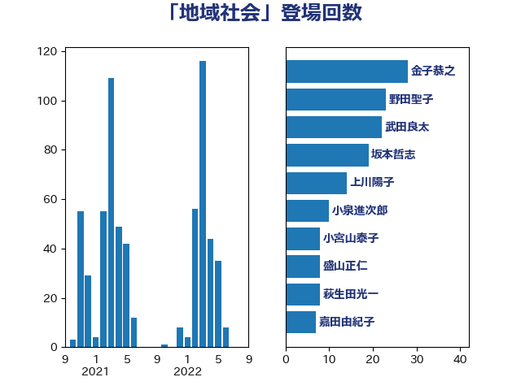

単語「地域社会」

| 金子恭之 | 自由民主党 | 28 回 |
| 野田聖子 | 自由民主党 | 23 回 |
| 武田良太 | 自由民主党 | 22 回 |
| 坂本哲志 | 自由民主党 | 19 回 |
| 上川陽子 | 自由民主党 | 14 回 |
| 小泉進次郎 | 自由民主党 | 10 回 |
| 小宮山泰子 | 立憲民主党 | 8 回 |
| 盛山正仁 | 自由民主党 | 8 回 |
| 萩生田光一 | 自由民主党 | 8 回 |
| 嘉田由紀子 | 無所属 | 7 回 |
| あかま二郎 | 自由民主党 | 6 回 |
| 小沢雅仁 | 立憲民主党 | 6 回 |
| 末松信介 | 自由民主党 | 6 回 |
| 菅義偉 | 自由民主党 | 6 回 |
| 野上浩太郎 | 自由民主党 | 6 回 |
| おおつき紅葉 | 立憲民主党 | 5 回 |
| 上田英俊 | 自由民主党 | 5 回 |
| 古賀友一郎 | 自由民主党 | 5 回 |
| 平沢勝栄 | 自由民主党 | 5 回 |
| 田村貴昭 | 日本共産党 | 5 回 |
| 田畑裕明 | 自由民主党 | 5 回 |
| 岸田文雄 | 自由民主党 | 4 回 |
| 平井卓也 | 自由民主党 | 4 回 |
| 杉久武 | 公明党 | 4 回 |
| 田村憲久 | 自由民主党 | 4 回 |
| 足立康史 | 日本維新の会 | 4 回 |
| 中村裕之 | 自由民主党 | 3 回 |
| 吉良州司 | 無所属 | 3 回 |
| 岡本あき子 | 立憲民主党 | 3 回 |
| 岸信夫 | 自由民主党 | 3 回 |
| 斉藤鉄夫 | 公明党 | 3 回 |
| 横沢高徳 | 立憲民主党 | 3 回 |
| 橋本岳 | 自由民主党 | 3 回 |
| 熊田裕通 | 自由民主党 | 3 回 |
| 谷公一 | 自由民主党 | 3 回 |
| 赤嶺政賢 | 日本共産党 | 3 回 |
| 鈴木庸介 | 立憲民主党 | 3 回 |
| 麻生太郎 | 自由民主党 | 3 回 |
| 三ッ林裕巳 | 自由民主党 | 2 回 |
| 井坂信彦 | 立憲民主党 | 2 回 |
| 伊波洋一 | 無所属 | 2 回 |
| 古川元久 | 国民民主党 | 2 回 |
| 和田義明 | 自由民主党 | 2 回 |
| 宗清皇一 | 自由民主党 | 2 回 |
| 室井邦彦 | 日本維新の会 | 2 回 |
| 宮路拓馬 | 自由民主党 | 2 回 |
| 山本左近 | 自由民主党 | 2 回 |
| 山際大志郎 | 自由民主党 | 2 回 |
| 岸真紀子 | 立憲民主党 | 2 回 |
| 後藤茂之 | 自由民主党 | 2 回 |
| 早坂敦 | 日本維新の会 | 2 回 |
| 末次精一 | 立憲民主党 | 2 回 |
| 枝野幸男 | 立憲民主党 | 2 回 |
| 柳ヶ瀬裕文 | 日本維新の会 | 2 回 |
| 河西宏一 | 公明党 | 2 回 |
| 浅野哲 | 国民民主党 | 2 回 |
| 浮島智子 | 公明党 | 2 回 |
| 玄葉光一郎 | 立憲民主党 | 2 回 |
| 田嶋要 | 立憲民主党 | 2 回 |
| 篠原孝 | 立憲民主党 | 2 回 |
| 美延映夫 | 日本維新の会 | 2 回 |
| 芳賀道也 | 国民民主党 | 2 回 |
| 若松謙維 | 公明党 | 2 回 |
| 葉梨康弘 | 自由民主党 | 2 回 |
| 西銘恒三郎 | 自由民主党 | 2 回 |
| 輿水恵一 | 公明党 | 2 回 |
| 鈴木貴子 | 自由民主党 | 2 回 |
| 階猛 | 立憲民主党 | 2 回 |
| 青木愛 | 立憲民主党 | 2 回 |
| 高橋はるみ | 自由民主党 | 2 回 |
| 三木亨 | 自由民主党 | 1 回 |
| 中司宏 | 日本維新の会 | 1 回 |
| 中川宏昌 | 公明党 | 1 回 |
| 中川郁子 | 自由民主党 | 1 回 |
| 中西祐介 | 自由民主党 | 1 回 |
| 伊藤岳 | 日本共産党 | 1 回 |
| 加田裕之 | 自由民主党 | 1 回 |
| 加藤勝信 | 自由民主党 | 1 回 |
| 務台俊介 | 自由民主党 | 1 回 |
| 勝目康 | 自由民主党 | 1 回 |
| 勝部賢志 | 立憲民主党 | 1 回 |
| 古屋範子 | 公明党 | 1 回 |
| 古川禎久 | 自由民主党 | 1 回 |
| 吉川赳 | 無所属 | 1 回 |
| 國重徹 | 公明党 | 1 回 |
| 城井崇 | 立憲民主党 | 1 回 |
| 堤かなめ | 立憲民主党 | 1 回 |
| 大口善徳 | 公明党 | 1 回 |
| 大野敬太郎 | 自由民主党 | 1 回 |
| 守島正 | 日本維新の会 | 1 回 |
| 安江伸夫 | 公明党 | 1 回 |
| 宮本徹 | 日本共産党 | 1 回 |
| 小山展弘 | 立憲民主党 | 1 回 |
| 小田原潔 | 自由民主党 | 1 回 |
| 小西洋之 | 立憲民主党 | 1 回 |
| 小野泰輔 | 日本維新の会 | 1 回 |
| 山下芳生 | 日本共産党 | 1 回 |
| 山本博司 | 公明党 | 1 回 |
| 山本香苗 | 公明党 | 1 回 |
| 山田俊男 | 自由民主党 | 1 回 |
| 山谷えり子 | 自由民主党 | 1 回 |
| 庄子賢一 | 公明党 | 1 回 |
| 斎藤洋明 | 自由民主党 | 1 回 |
| 新谷正義 | 自由民主党 | 1 回 |
| 日下正喜 | 公明党 | 1 回 |
| 本田顕子 | 自由民主党 | 1 回 |
| 林芳正 | 自由民主党 | 1 回 |
| 根本幸典 | 自由民主党 | 1 回 |
| 梅谷守 | 立憲民主党 | 1 回 |
| 梶山弘志 | 自由民主党 | 1 回 |
| 森屋隆 | 立憲民主党 | 1 回 |
| 櫻井充 | 自由民主党 | 1 回 |
| 武部新 | 自由民主党 | 1 回 |
| 江田憲司 | 立憲民主党 | 1 回 |
| 池田佳隆 | 自由民主党 | 1 回 |
| 河野義博 | 公明党 | 1 回 |
| 浅川義治 | 日本維新の会 | 1 回 |
| 渡辺猛之 | 自由民主党 | 1 回 |
| 片山さつき | 自由民主党 | 1 回 |
| 牧島かれん | 自由民主党 | 1 回 |
| 矢倉克夫 | 公明党 | 1 回 |
| 石井苗子 | 日本維新の会 | 1 回 |
| 石川香織 | 立憲民主党 | 1 回 |
| 神谷裕 | 立憲民主党 | 1 回 |
| 福田達夫 | 自由民主党 | 1 回 |
| 稲田朋美 | 自由民主党 | 1 回 |
| 笹川博義 | 自由民主党 | 1 回 |
| 羽田次郎 | 立憲民主党 | 1 回 |
| 舟山康江 | 国民民主党 | 1 回 |
| 落合貴之 | 立憲民主党 | 1 回 |
| 藤原崇 | 自由民主党 | 1 回 |
| 藤川政人 | 自由民主党 | 1 回 |
| 西岡秀子 | 国民民主党 | 1 回 |
| 角田秀穂 | 公明党 | 1 回 |
| 赤池誠章 | 自由民主党 | 1 回 |
| 赤澤亮正 | 自由民主党 | 1 回 |
| 赤羽一嘉 | 公明党 | 1 回 |
| 越智隆雄 | 自由民主党 | 1 回 |
| 道下大樹 | 立憲民主党 | 1 回 |
| 酒井庸行 | 自由民主党 | 1 回 |
| 野田国義 | 立憲民主党 | 1 回 |
| 野間健 | 立憲民主党 | 1 回 |
| 金子恵美 | 立憲民主党 | 1 回 |
| 鈴木憲和 | 自由民主党 | 1 回 |
| 高階恵美子 | 自由民主党 | 1 回 |
| 鬼木誠 | 立憲民主党 | 1 回 |
| 鳩山二郎 | 自由民主党 | 1 回 |